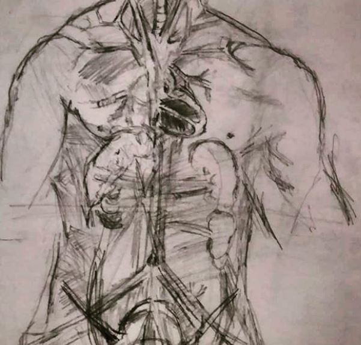
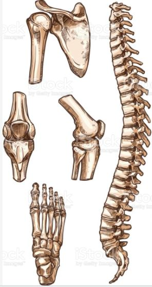
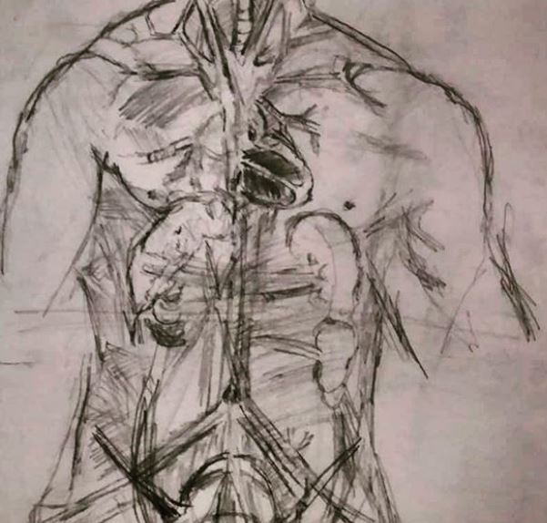
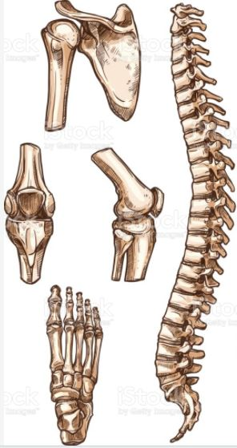
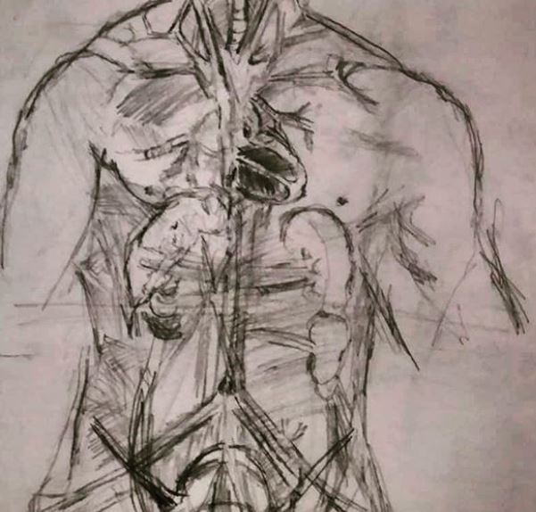
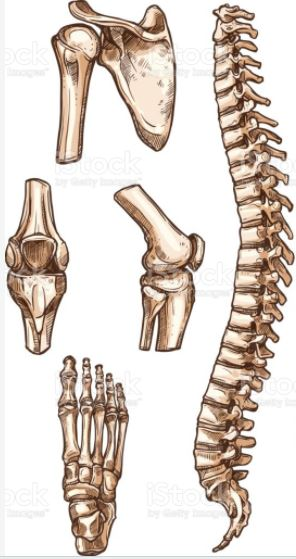

Hi , I am Saumyam.
a medical engineer.

 



a medical engineer.


A healthcare professional,I have received training from University College London and Vellore Institute of Technology , VIT University.
Currently I am working with Sinterex at Dubai Health Authority (DHA) innovation center , enabling surgeons to use medical 3D printing for complex surgical procedure
I love reading , writing poems , sketching and playing racquet sports
hospital 3d printing work ,3D image reconstructions and 3d printing

Development of bioresorbable scaffold using industrial electrospinning system by Elmarco